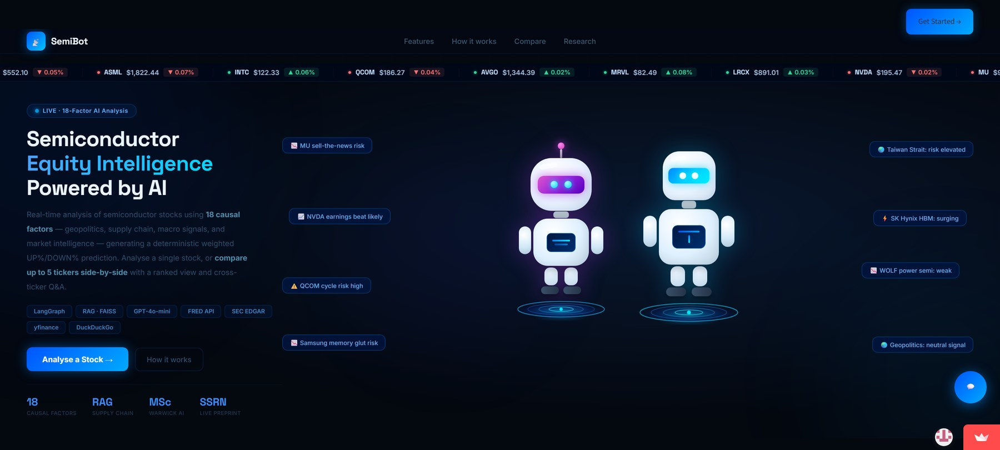
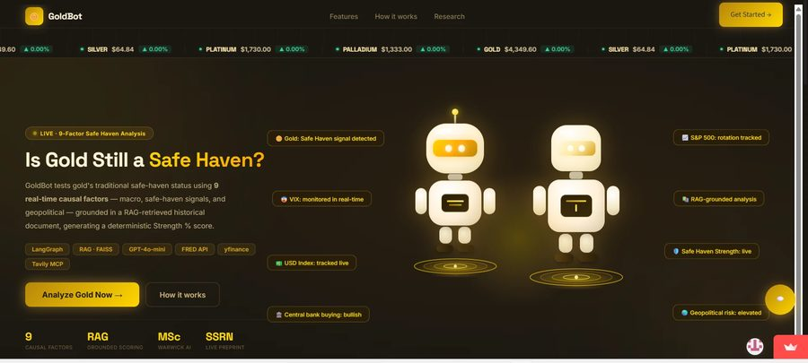
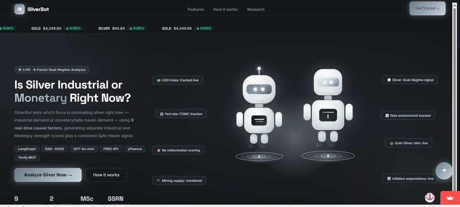
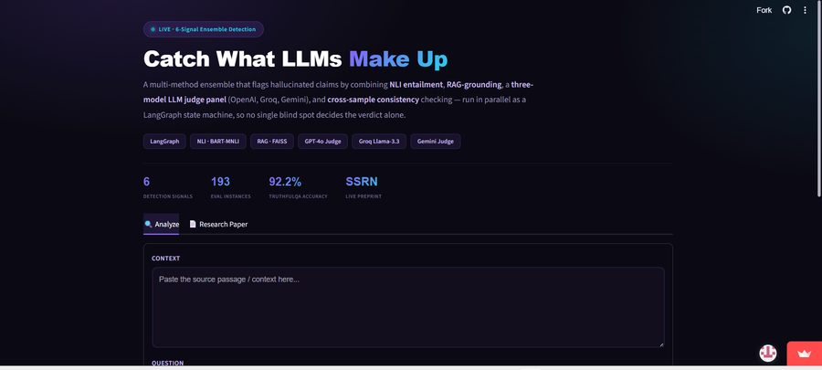

AI Engineer
Mar 2024 – Mar 2025Built ML pipelines to prepare and process data for model training, integrated into existing backend systems — improving analysis accuracy and reporting efficiency.
HELLO, I'M
AI/ML Engineer | Agentic AI Systems | GenAI Research
MSc Applied AI candidate at the University of Warwick, graduating September 2026, with two years of prior industry experience in data analytics and ML engineering. I design multi-agent, retrieval-augmented systems — from causal-chain equity analysis to hallucination detection — and publish the research behind each one.
I'm an AI/ML Engineer building agentic, retrieval-augmented systems that reason through causal chains rather than surface correlated signals. Currently completing my MSc in Applied AI at the University of Warwick, I bring two years of prior industry experience in data analytics and ML engineering, and I publish the research behind every system I ship — six deployed projects, four live preprints. Based in London, UK, and open to AI/ML Engineer, GenAI Engineer, and Agentic AI roles.
Two years eight months at H&B Infotech, progressing from intern to AI Engineer.
Built ML pipelines to prepare and process data for model training, integrated into existing backend systems — improving analysis accuracy and reporting efficiency.
Engineered backend systems and data pipelines powering internal reporting tools, with data validation and front-end integration work.
Developed and validated Python-MySQL modules to support internal systems. Built front-end interfaces for internal tools.
H&B Infotech, India
University of Warwick, WMG · September 2025 – September 2026
Gujarat Technological University · August 2021 – May 2025
Six deployed systems, each paired with a published paper. Built on a shared architecture — LangGraph orchestration, FAISS retrieval, Streamlit interfaces — applied to a different domain each time.

Most LLM equity tools surface correlated market signals without modeling why they move together. SemiBot instead traces an 18-factor causal chain connecting macro conditions to sector outcomes for semiconductor equities specifically, with per-factor attribution rather than a single opaque verdict.
426 observations, 48 tickers: accuracy scales from 84.0% (>$1T) to 41.7% (mid-cap) — confirmed via logistic regression (p<0.001) and robust to sub-sector controls. Mega-cap subset exceeds every comparable published benchmark.

A nine-factor safe-haven analyzer for gold. Rather than assuming the system works and reporting a single accuracy figure, GoldBot is stress-tested across four structurally distinct historical regimes specifically to separate genuine event discrimination from lucky trend alignment.
Diagnostic finding: across 18 distinct events — a war outbreak, a ceasefire, a historic Fed vote — output stayed within a 37–50% band (SD=4.2). Cross-regime testing exposed trend-matching rather than true discrimination, a failure mode a single backtest would have missed entirely.

Gold's monetary-driver explanation is documented in the literature not to hold for silver, whose price is pulled by industrial demand as much as safe-haven sentiment. SilverBot decomposes this into independent industrial and monetary strength scores rather than forcing a single gold-style score.
Industrial signals beat Monetary in 3 of 4 regimes (61.7% vs. 40.0%, p=0.041 in the largest sample) — but the pattern cleanly reverses during the 2020 liquidity crisis (Monetary 95.0% vs. Industrial 65.0%), refining the classical gold/silver duality literature.

A six-signal ensemble for LLM hallucination detection — NLI, retrieval grounding, a three-model LLM-judge panel, and cross-sample self-consistency, run as a parallel LangGraph pipeline. Evaluated with formal significance testing rather than accuracy alone.
72.4–92.2% accuracy across three benchmarks. A quadrant analysis overturned the system's own design assumption: "flagged + consistent" claims were 100% real hallucinations (n=4), beating the architecture's own "high-confidence" category (66.7%).
A human-in-the-loop email drafting agent that never sends without approval. A binary Response/Ignore triage stage filters incoming mail before drafting begins, with full multi-turn interrupt/resume via LangGraph, dual Gmail OAuth, and a Manifest V3 Chrome extension for inline drafting alongside a standalone Streamlit interface.
Zero secrets exposed across the full repo history, verified — two parallel interfaces (v1 Streamlit, v2 Chrome extension with version-history tabs) shipped and maintained side by side.
Full-coverage discovery, research, comparison, and portfolio analysis across all 503 S&P 500 constituents, spanning six pages from dashboard to guided learning. Built on one governing principle: the LLM narrates what the data shows — it never tells the user what to buy.
Passed a 100-question adversarial safety test, 100/100 — results committed to the repo. Implements 9 of 10 recognized agentic-AI design patterns, with the omission (MCP) explicitly justified rather than silently skipped.
All four preprints are live on SSRN and in active submission to peer-reviewed journals.
Understanding the Role of Artificial Intelligence in Life Cycle Assessment — supervised by Dr. You Wu, WMG, University of Warwick. Dissertation complete, September 2026.
Combined a recent systematic literature review (538 papers screened from 1,509 candidates, 209 analysed in full) with a structured review of 8 commercial AI-powered LCA platforms, mapped against the four ISO 14040/14044 workflow stages.
Both research attention and commercial tooling concentrate almost exclusively on the Life Cycle Inventory stage — none of the 8 platforms reviewed target AI-assisted goal-and-scope drafting or interpretation, the gap Objective 3 addresses directly.
Multi-method unsupervised learning on the ecoinvent 3.11 dataset (25,412 activity-geography records). Reduced 68 redundant climate indicators (49.6% of pairs correlated >0.98) to 7 conceptually distinct features, then cross-validated three clustering algorithms and two anomaly detectors against each other rather than trusting a single method.
KMeans and Agglomerative converged closely (silhouette 0.689 vs. 0.686, k=8). Isolation Forest flagged 509 anomalies (2%); near-zero agreement with LOF (Jaccard 0.001) was traced to 23.2% of activities sharing duplicate climate-impact profiles — a genuine data artefact, not a false positive.
Evaluated six LLMs — Claude Haiku 4.5, GPT-4o-mini, GPT-5.6 Terra, Gemini 3.5 Flash, Llama 3.3 70B, GPT-OSS 120B — on structured extraction and ISO 14044 goal-and-scope drafting, sampled directly from ecoinvent 3.11. An initial near-universal 100% extraction accuracy across 5 of 6 models, on a task with directly quoted answer spans, collapsed dramatically once a harder, paraphrased variant removed that shortcut.
Paraphrased extraction accuracy dropped by up to 65 percentage points (GPT-4o-mini 91%→26%; GPT-OSS 120B 100%→44%). Gemini 3.5 Flash held up best (100%→86%), significantly outperforming the two weakest models (Cochran's Q=66.7, p<0.000001).

A small assistant grounded strictly in the content on this page — ask about my projects, papers, experience, or education. It won't guess; if it doesn't know something, it'll say so and point you to my email instead of making something up.
Open to AI/ML Engineer, GenAI Engineer, and Agentic AI roles — also exploring PhD positions in CS/AI and applied economics.